The meaning of life
Survivor stories
In our parliament today we have a party with strong national socialist core values and xenophobic views. This means that 5% of the electorate sympathize with these views! What you see is basically a photo book with pictures taken from primarily Auschwitz - Birkenau. The photos were taken during several trips in the spring, summer and autumn of 2012. The images will be presented along with tales and stories drawn from conversations with survivors. A book that can bare to "lay around" and be talked about! We must never forget!Hans Carlbrand
Guard hall and the entrance to the camp at Auschwitz with the well-known sign. The theft of the sign turned out in retrospect to be positive for the museum by all the attention the event received in the world press.
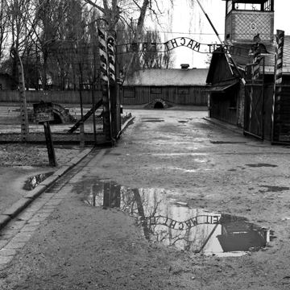
Guard venue, at the gate to the camp at Auschwitz
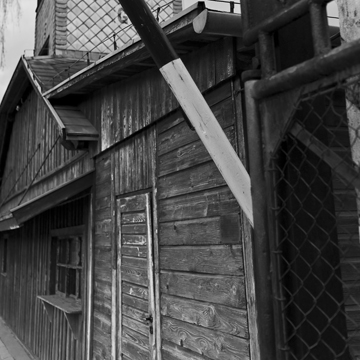
Detail from the sentry box, Auschwitz. Simple wooden building for protection from the weather
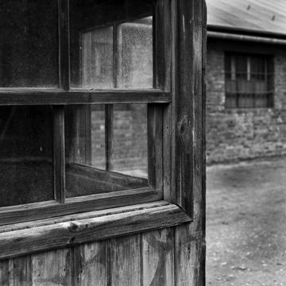
Auschwitz, Barbed wire fence in double rows with a patrolling corridor between
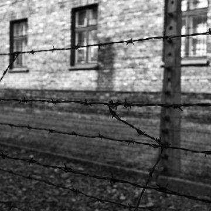
Auschwitz, watch tower and fence
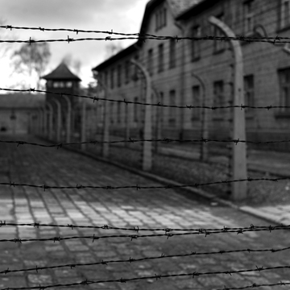
Auschwitz, Barbed wire fence in double rows with patrolling corridor and watch tower in the background
Warning sign for high voltage fence in Auschwitz
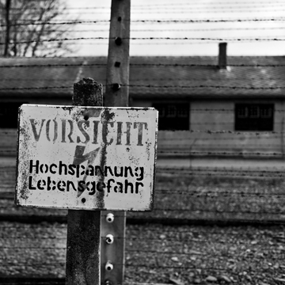
Warning sign outside block 11 at Auschwitz
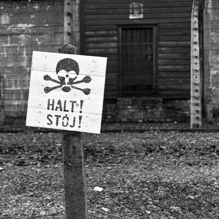
Block 11 Auschwitz grille gate in the corridor outside the interrogation rooms
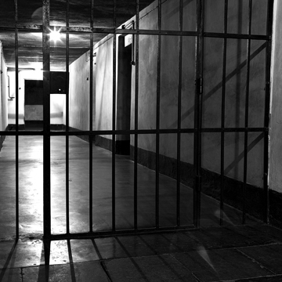
Block 11 at Auschwitz. Starvation Cells in the block basement
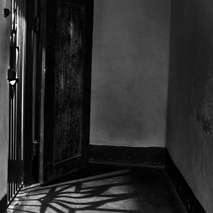
The gate into the execution yard, Auschwitz with the wall in the background
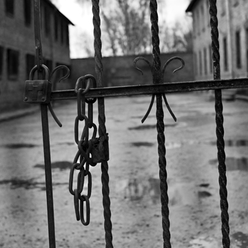
Block 11 at Auschwitz. On the way to execution, the prisoners were forced to strip naked
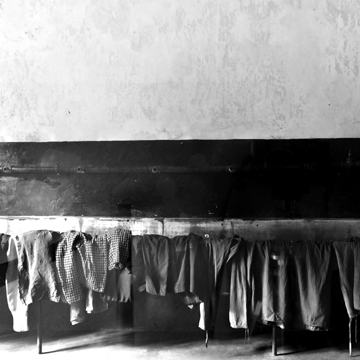
Auschwitz, the anteroom to the gas chamber
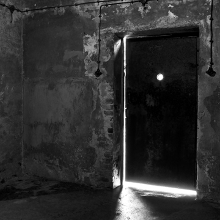
Auschwitz gas chamber. The chamber used for experiments on Russian prisoners of war amongst others. The aim was to develop the technology
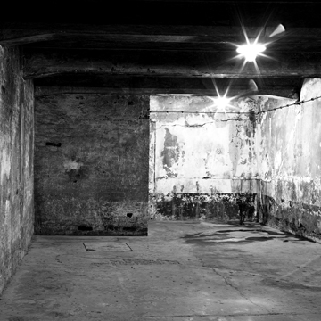
Auschwitz crematorium. Trolleys used for cremation
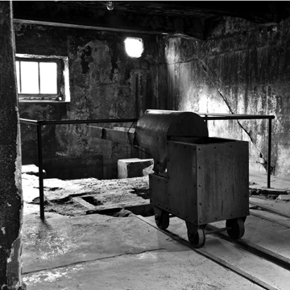
Auschwitz crematorium with a total of 4 furnaces
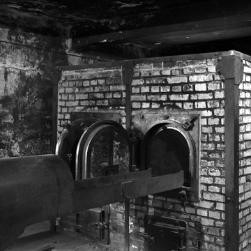
Auschwitz crematorium. Rail System with reversible plates in the floor
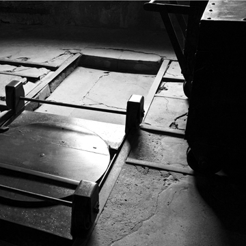
Auschwitz crematorium. Trolley used for cremation
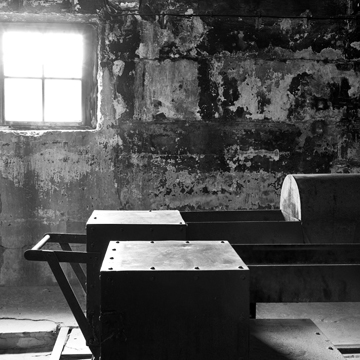
Birkenau yard with unloading ramp and the gate to the camp in the background
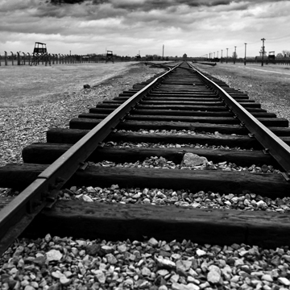
Birkenau yard with the unloading ramp in the background
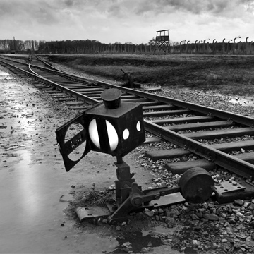
Birkenau, quarantine camp, former stables of the Polish cavalry
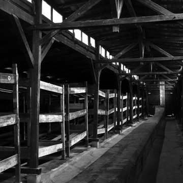
Birkenau, detail from the yard

Wagon, which was used to transport prisoners to Birkenau. In the foreground the stairs up to the sentry box that sat mounted on the outside of the wagons. In the background is the gate to the camp at Birkenau
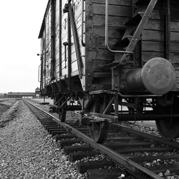
Wagon, which was used to transport prisoners to Birkenau
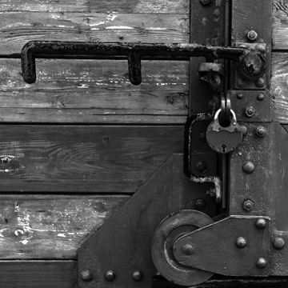
Birkenau, the gate to the second crematorium
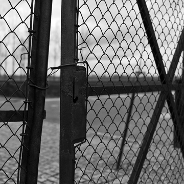
Birkenau women's camp, barracks interior. The concrete floor has been added afterwards
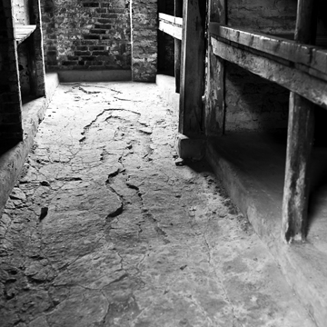
Birkenau women's camp, barracks interior. Examples of bizarre signs and banners on the walls. If you look closely you can see inscriptions. These have been retrospectively added and are not authentic
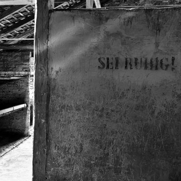
Birkenau women's camp, barracks interior. Examples of bizarre signs and banners on the walls. If you look closely you can see inscriptions. These have been retrospectively added and are not authentic
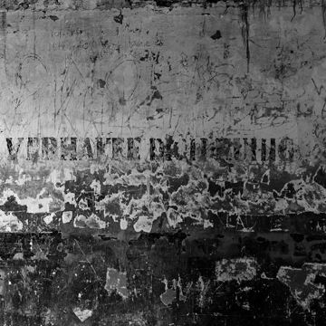
Birkenau women's camp, barracks interior. The concrete floor has been added afterwards
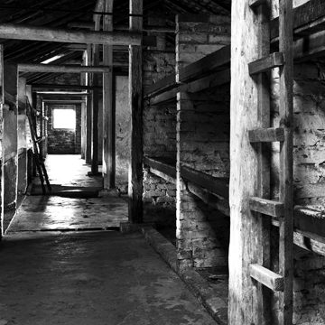
View over Birkenau no.1 seen from the unloading ramp
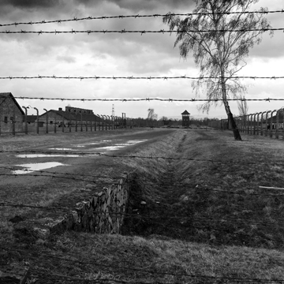
The gates to Birkenau No.1 in the foreground fence in front of the high voltage barbed wire
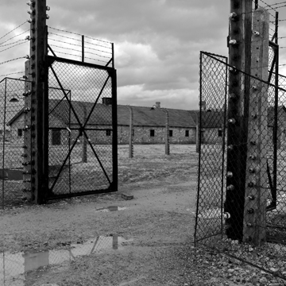
The gates to Birkenau No.1 in the foreground parts of the guard room adjacent to the unloading ramp
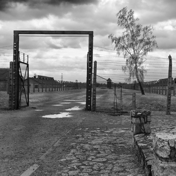